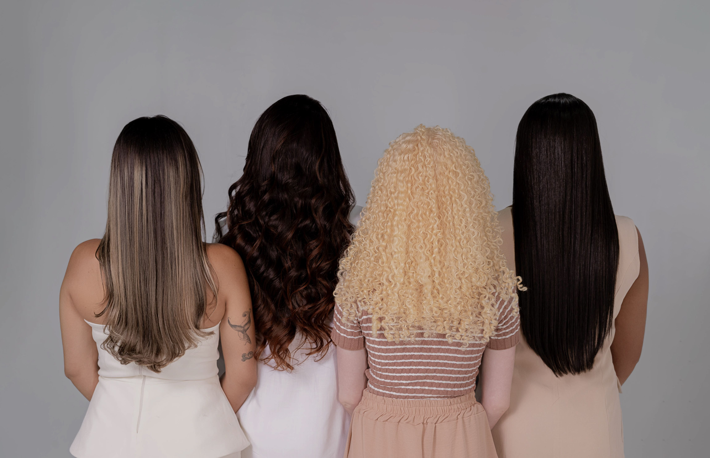
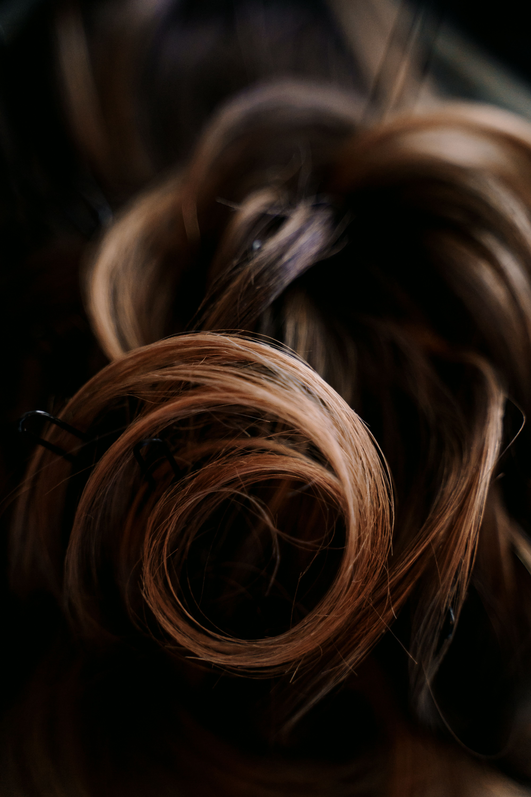
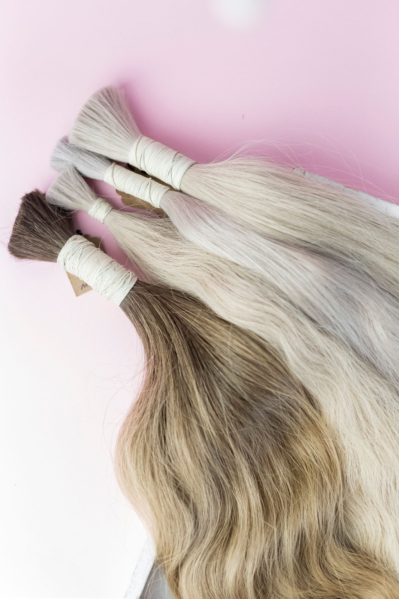

100% Humano Natural
Sem fios sintéticos ou misturas. Aceita chapinha, babyliss e processos químicos com total segurança.
Fios sedosos, cutículas alinhadas e zero mistura. Pronto para descolorir, hidratar e aplicar na técnica que você preferir.
VER CATÁLOGO E TEXTURASSem fios sintéticos ou misturas. Aceita chapinha, babyliss e processos químicos com total segurança.
Fios selecionados manualmente para garantir volume uniforme da raiz até as pontas.
Com os cuidados básicos de hidratação, o cabelo mantém o brilho e a maciez por anos.

Fios alinhados, sedosos e com brilho intenso. Ideal para alongamentos discretos.

Movimento natural e volume equilibrado. Versátil para usar ao natural ou escovado.

Cachos fechados e macios que mantêm a definição após a lavagem.